Wingless Ground Effect
The original 2022–23 9X8 generated downforce primarily through its underfloor, scoring its first WEC podium with 3rd at the 2023 6 Hours of Monza.
Four decades of Group B, Dakar, Le Mans, Formula 1 & Hypercar
2022 — Today · FIA WEC Hypercar
Peugeot's bold return to the 24 Hours of Le Mans and the FIA World Endurance Championship. Conceived around a radical aerodynamic thesis: a top-class hybrid Hypercar engineered with no rear wing.
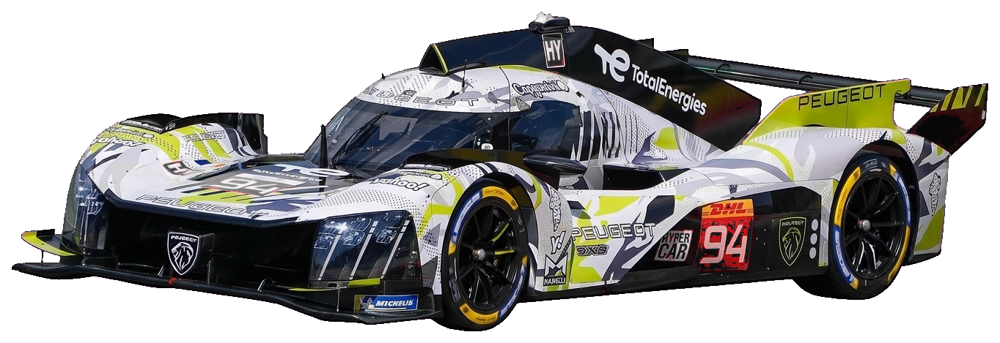
2024 #94 Peugeot 9X8 Hypercar — "Pack of Lions" WEC livery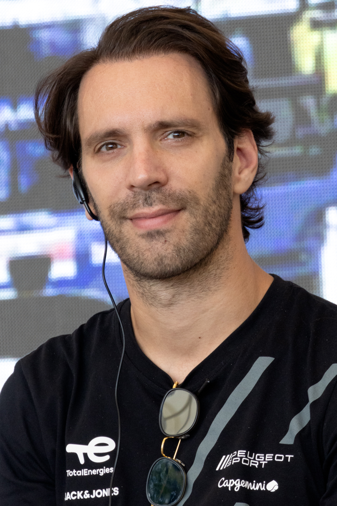
Two-time Formula E Champion spearheading the 9X8 Hypercar programme since its 2022 Monza debut.
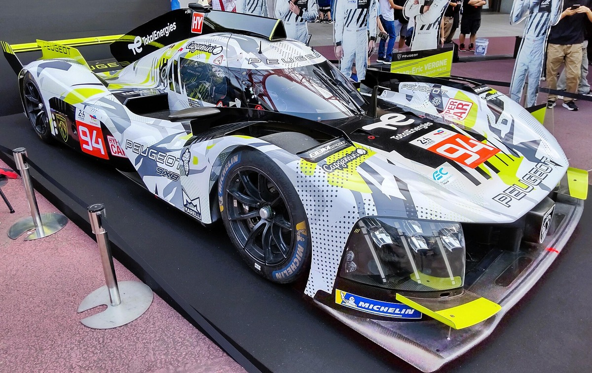
Chalk White, Selenium Grey, Obsidian Black & Kryptonite lion-head graphics debuting on the 2024 winged 9X8.
The original 2022–23 9X8 generated downforce primarily through its underfloor, scoring its first WEC podium with 3rd at the 2023 6 Hours of Monza.
Debuting at Imola 2024 with ~90% revised bodywork, staggered tyres, and a conventional rear wing, the evolved 9X8 claimed podiums at Bahrain 2024 (3rd) and Fuji 2025 (2nd).
Rear-wheel-drive V6 paired with a front electric motor-generator unit under Hypercar Balance of Performance regulations, wearing the 2021 neo-retro lion shield.
1981 — 1986 · World Rally Championship
In October 1981 Jean Todt founded Peugeot Talbot Sport. Three years later the mid-engined, four-wheel-drive 205 Turbo 16 exploded onto the World Rally Championship — wearing the iconic four-color PTS stripes and 1975 "Lion Fil" outline.
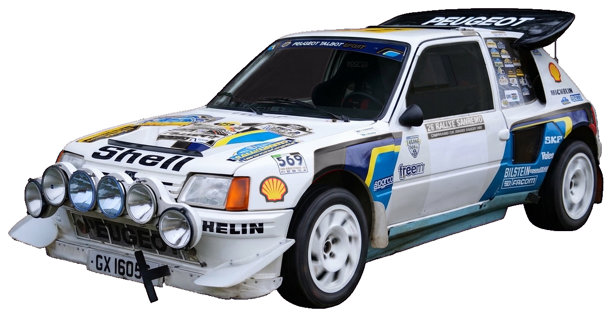
1985 Peugeot 205 Turbo 16 Evolution 2 — PTS 4-color rally iconDebuted at the 1984 Tour de Corse. Mid-mounted 1.8L twin-cam 16V turbo inline-4 (~350 hp), full-time 4WD, and 200 homologation road cars based on the compact 205 hatchback.
Lighter, wider, and far more aggressive — crowned by a massive roof wing and front dive planes. Dominated the final two seasons of Group B.
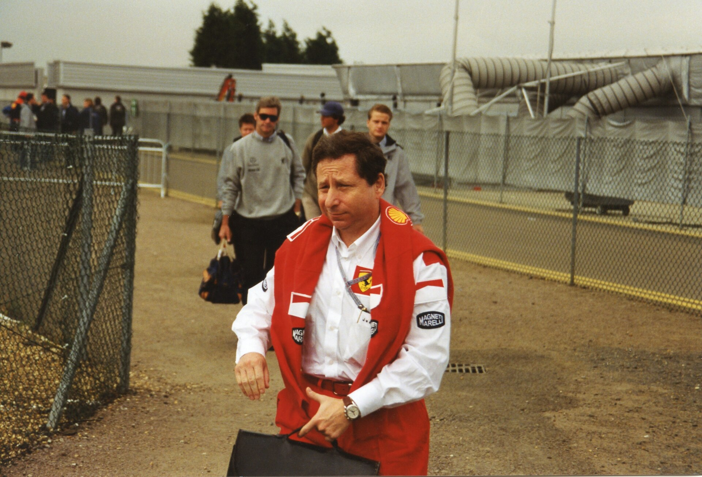
Built Peugeot Talbot Sport from scratch in October 1981, orchestrating Group B, Dakar, and Le Mans dynasties.
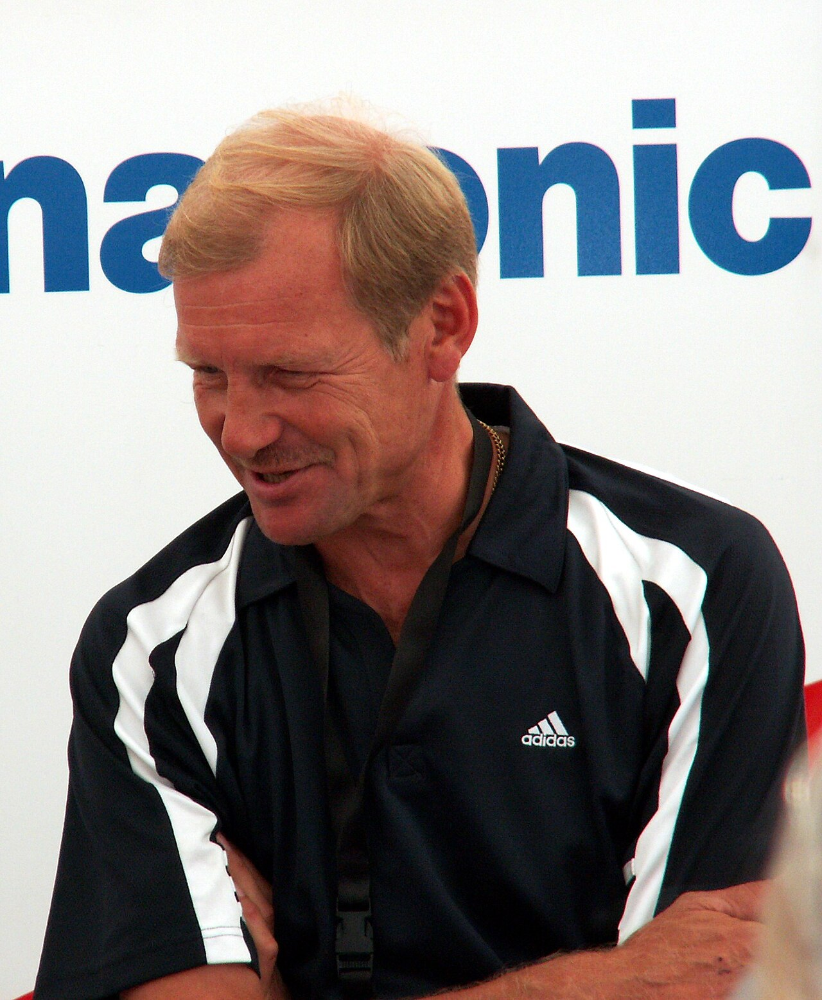
Delivered Peugeot's second consecutive WRC Drivers' & Manufacturers' double in the 205 T16 Evo 2.
1987 — 1990 · Rally Raid & Hill Climb
When Group B was banned, Peugeot Talbot Sport turned its Turbo 16 hardware toward the world's toughest extremes: the Sahara sands of the Paris–Dakar and the 14,115-foot gravel summit of Pikes Peak.
Stretched wheelbase, huge fuel tanks, and long-travel desert suspension. Ari Vatanen won the Paris–Dakar at Peugeot's very first attempt in 1987; Juha Kankkunen repeated in 1988.
Vatanen set a 10:47.22 Pikes Peak record in 1988 (immortalised in Climb Dance), followed by Robby Unser's 1989 win. Vatanen also won the 1989 (after Todt's 10-franc coin toss with Jacky Ickx) and 1990 Dakars.
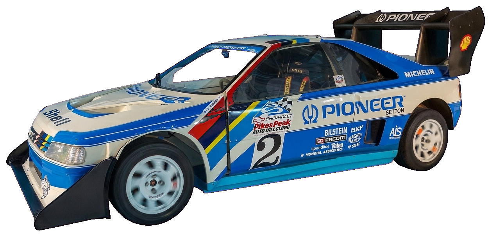
#2 Peugeot 405 Turbo 16 Pikes Peak — 600+ hp, 4WS, Climb Dance legend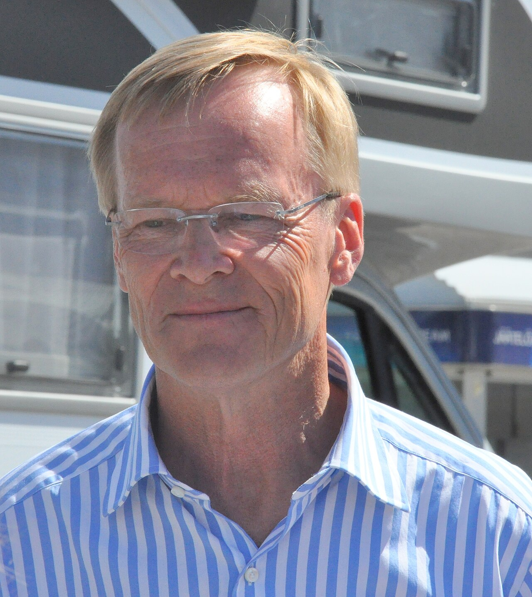
Master of both desert and mountain — three Paris–Dakar crowns (1987, 1989, 1990) and the legendary 1988 Pikes Peak ascent.
1990 — 1993 · World Sportscar & Le Mans
In July 1990 the team moved to Vélizy-Villacoublay and became Peugeot Sport. Built to Formula 1-style 3.5-litre V10 Group C regulations, the carbon-monocoque 905 delivered Peugeot's first outright Le Mans crowns.
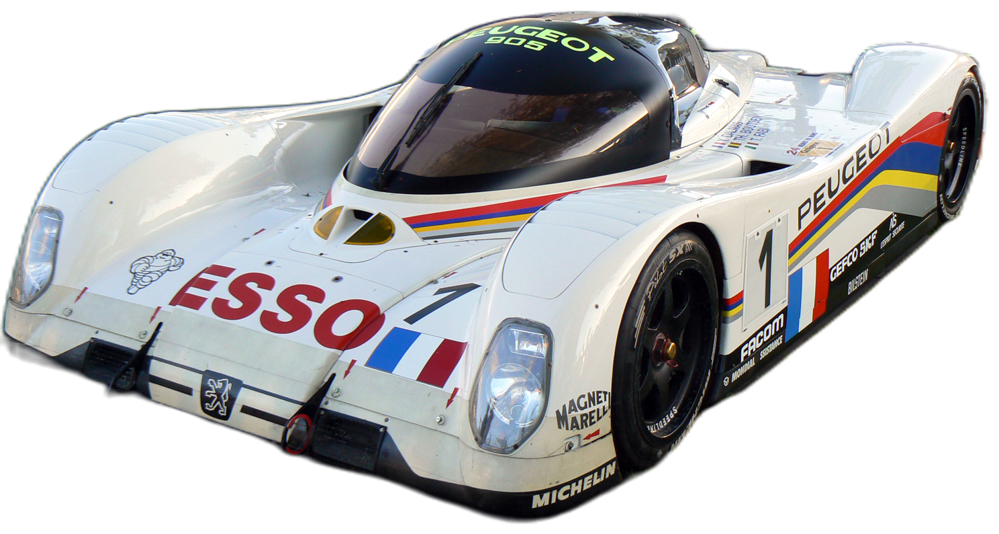
1993 Peugeot 905 Evo 1 Ter — 3.5L V10 Group C Le Mans championScreaming naturally aspirated 3.5-litre V10 wrapped in a Dassault-assisted carbon chassis, sporting classic PTS four-color swishes over white and Esso blue.
Radically reworked aerodynamics with a towering bi-plane wing package. Swept the 1992 World Sportscar Championship and locked out the entire 1993 Le Mans podium.
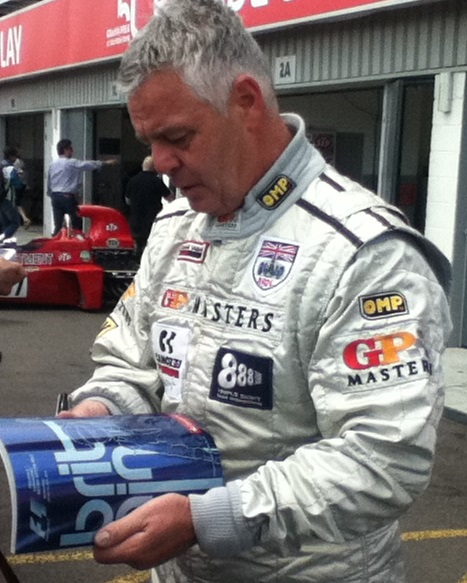
Anchored Peugeot's breakthrough 1992 24 Hours of Le Mans victory and World Sportscar title alongside Yannick Dalmas & Mark Blundell.
1994 — 2000 · Formula 1 Engine Supplier
The 905's V10 architecture translated straight onto the Formula 1 grid. Across 115 Grands Prix and 14 podiums, Peugeot powered McLaren, Jordan, and Alain Prost's all-French squad.
Peugeot's Formula 1 debut in iconic dayglo red and white, scoring eight podium finishes in a single season with Mika Häkkinen and Martin Brundle.
Three competitive seasons highlighted by Barrichello & Irvine's famous 2nd–3rd double podium in Montreal 1995 and strong 1997 yellow "Buzzin' Hornets" pace.
An all-French alliance in Gauloises blue, capped by Jarno Trulli's memorable 2nd-place finish at the rain-soaked 1999 European Grand Prix.
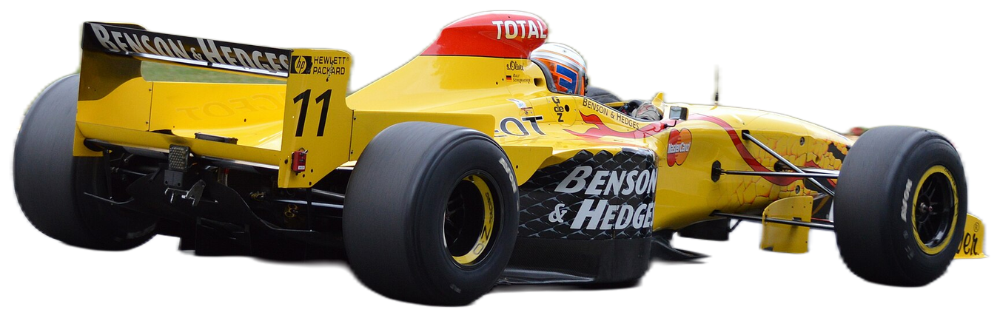
1997 Jordan 197 Peugeot A14 V10 — #11 on track in iconic yellow livery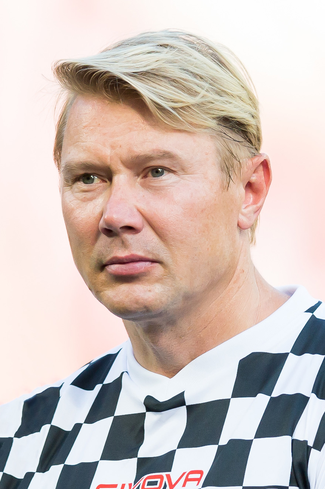
Led Peugeot's maiden F1 campaign with six podiums in the MP4/9 — including 2nd place at Spa-Francorchamps.
1999 — 2005 · World Rally Championship
Returning to the WRC with the razor-agile 206 WRC — crowned by the bold 1998 solid chrome lion stretching across its silver flanks — Peugeot captured three consecutive Manufacturers' titles.
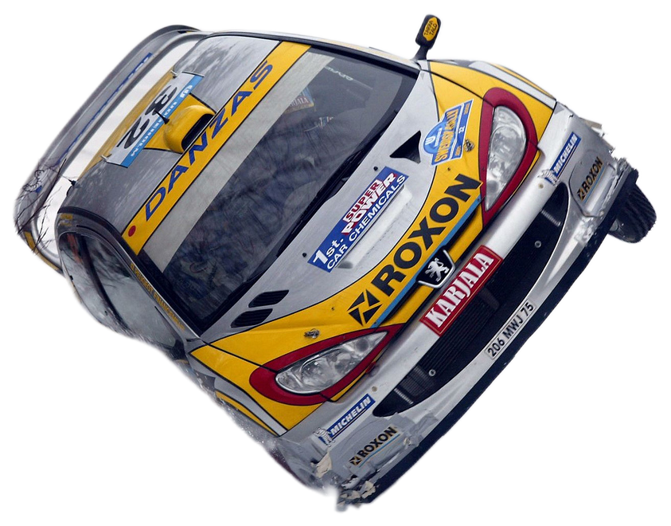
Peugeot 206 WRC in full flight — 24 WRC wins & 3 straight Manufacturers' crownsTurbocharged 2.0L, four-wheel drive, built on a chassis so short Peugeot produced 4,000 units of the road-going 206 GT with extended front and rear bumpers to meet the 4.00 m FIA minimum length. Tarmac ace Gilles Panizzi even pulled a mid-stage 360° donut en route to winning Catalunya 2002.
Successor based on the 307 CC coupé-cabriolet, adding three more WRC victories with Marcus Grönholm before Peugeot pivoted back to Le Mans.
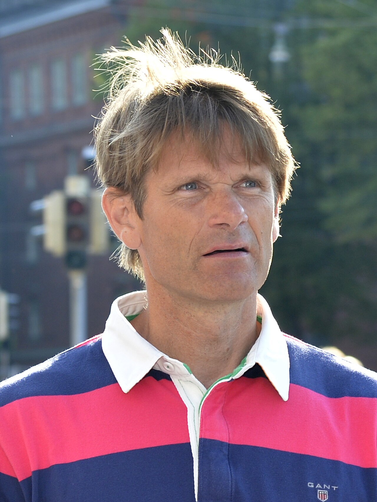
Two-time World Rally Champion with Peugeot Sport, defining the 206 WRC "Silver Bullet" era across gravel and snow.
2007 — 2011 · Le Mans & ILMC
Whisper-quiet yet brutally torquey, the closed-cockpit 908 HDi FAP paired exposed carbon weave with a 5.5-litre V12 turbodiesel to break Audi's stranglehold at La Sarthe.
Over 700 hp and 1,200 Nm of torque filtered through dual particulate traps. Captured the 2007 Le Mans Series, the iconic 2009 Le Mans 1-2 victory, and the inaugural 2010 ILMC title.
All-new regulation-change V8 prototype wearing the 2010 sculpted bimetallic lion — dominating the 2011 Intercontinental Le Mans Cup with six wins from seven rounds.
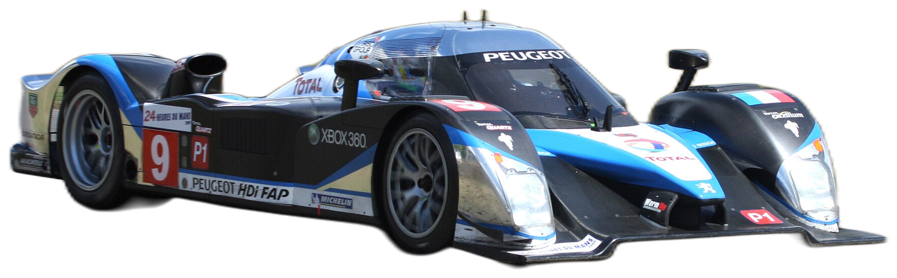
2009 Le Mans Winner — #9 Peugeot 908 HDi FAP (5.5L V12 Turbodiesel)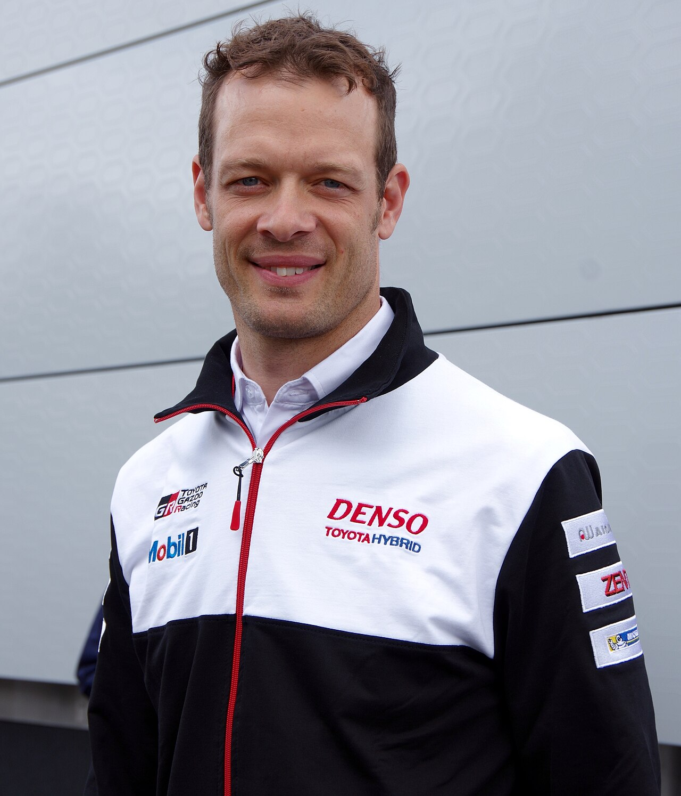
Shared the winning #9 Peugeot 908 HDi FAP with Marc Gené & David Brabham to deliver Peugeot's third Le Mans victory.
2013 — 2018 · Pikes Peak & Dakar
Twenty-five years after Climb Dance, Peugeot returned to Colorado with an 875-hp monster — then unleashed a radical two-wheel-drive desert buggy to dominate the South American Dakar.
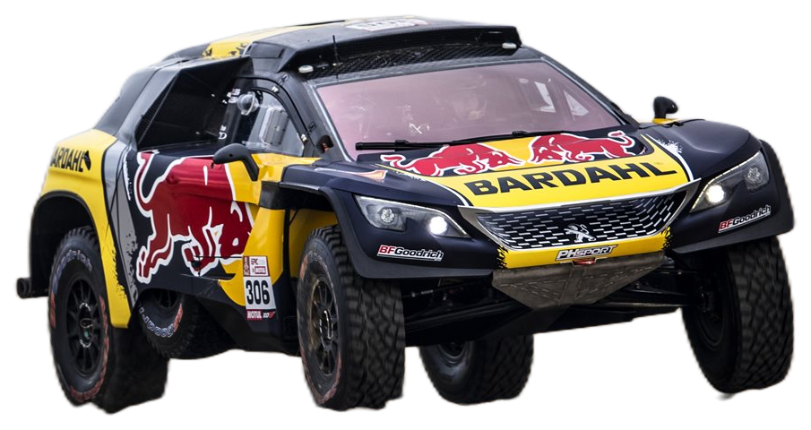
Peugeot 3008 DKR airborne — 2WD desert dominator (2016–2018 Dakar hat-trick)3.2L twin-turbo V6, 0–100 km/h in 1.8 s, 0–200 km/h in 4.8 s, borrowing rear-wing aero DNA from the 908. Sébastien Loeb shattered the Pikes Peak record in 8:13.878.
Long-travel two-wheel-drive desert racers that conquered Dakar three years straight — including a 2017 Peugeot 1-2-3 sweep (Peterhansel, Loeb, Despres) and Carlos Sainz's 2018 triumph in the wider 3008 DKR Maxi.
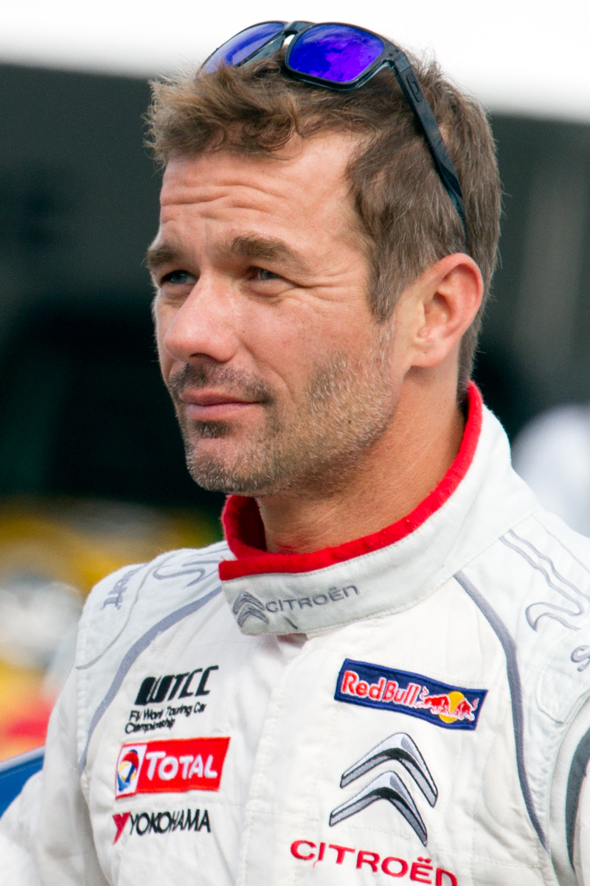
Nine-time WRC Champion who obliterated the Pikes Peak record by over 90 seconds in the 208 T16.
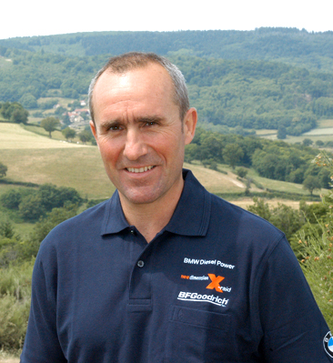
"Mr. Dakar" led Peugeot's 2008 DKR & 3008 DKR dominance with back-to-back desert crowns and the 2017 1-2-3 sweep.
From the gravel of Corsica to the Mulsanne straight — the lion keeps roaring.